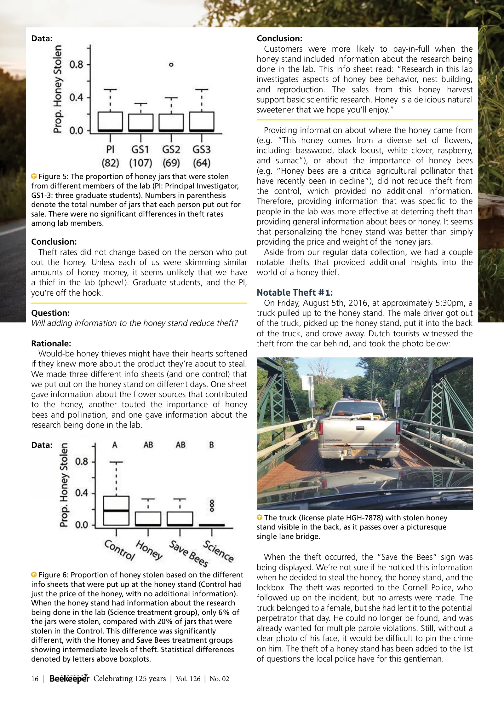

Data:
Conclusion:
Theft rates did not change based on the person who put
out the honey. Unless each of us were skimming similar
amounts of honey money, it seems unlikely that we have
a thief in the lab (phew!). Graduate students, and the PI,
you’re off the hook.
Question:
Will adding information to the honey stand reduce theft?
Rationale:
Would-be honey thieves might have their hearts softened
if they knew more about the product they’re about to steal.
We made three different info sheets (and one control) that
we put out on the honey stand on different days. One sheet
gave information about the flower sources that contributed
to the honey, another touted the importance of honey
bees and pollination, and one gave information about the
research being done in the lab.
Data:
Conclusion:
Customers were more likely to pay-in-full when the
honey stand included information about the research being
done in the lab. This info sheet read: “Research in this lab
investigates aspects of honey bee behavior, nest building,
and reproduction. The sales from this honey harvest
support basic scientific research. Honey is a delicious natural
sweetener that we hope you’ll enjoy.”
Providing information about where the honey came from
(e.g. “This honey comes from a diverse set of flowers,
including: basswood, black locust, white clover, raspberry,
and sumac”), or about the importance of honey bees
(e.g. “Honey bees are a critical agricultural pollinator that
have recently been in decline”), did not reduce theft from
the control, which provided no additional information.
Therefore, providing information that was specific to the
people in the lab was more effective at deterring theft than
providing general information about bees or honey. It seems
that personalizing the honey stand was better than simply
providing the price and weight of the honey jars.
Aside from our regular data collection, we had a couple
notable thefts that provided additional insights into the
world of a honey thief.
Notable Theft #1:
On Friday, August 5th, 2016, at approximately 5:30pm, a
truck pulled up to the honey stand. The male driver got out
of the truck, picked up the honey stand, put it into the back
of the truck, and drove away. Dutch tourists witnessed the
theft from the car behind, and took the photo below:
Figure 5: The proportion of honey jars that were stolen
from different members of the lab (PI: Principal Investigator,
GS1-3: three graduate students). Numbers in parenthesis
denote the total number of jars that each person put out for
sale. There were no significant differences in theft rates
among lab members.
The truck (license plate HGH-7878) with stolen honey
stand visible in the back, as it passes over a picturesque
single lane bridge.
Figure 6: Proportion of honey stolen based on the different
info sheets that were put up at the honey stand (Control had
just the price of the honey, with no additional information).
When the honey stand had information about the research
being done in the lab (Science treatment group), only 6% of
the jars were stolen, compared with 20% of jars that were
stolen in the Control. This difference was significantly
different, with the Honey and Save Bees treatment groups
showing intermediate levels of theft. Statistical differences
denoted by letters above boxplots.
When the theft occurred, the “Save the Bees” sign was
being displayed. We’re not sure if he noticed this information
when he decided to steal the honey, the honey stand, and the
lockbox. The theft was reported to the Cornell Police, who
followed up on the incident, but no arrests were made. The
truck belonged to a female, but she had lent it to the potential
perpetrator that day. He could no longer be found, and was
already wanted for multiple parole violations. Still, without a
clear photo of his face, it would be difficult to pin the crime
on him. The theft of a honey stand has been added to the list
of questions the local police have for this gentleman.
16 |
Celebrating 125 years | Vol. 126 | No. 02